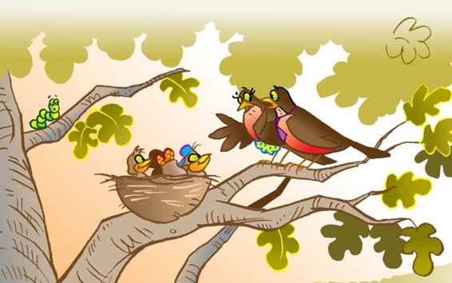

“I guess it would be good if we could give each one just what they want. We will have to do a lot of extra searching, but if it will make them happy, it may be worth it. Come on, let’s go see what we can find,” Papa Robin said at last.
Mama Robin usually preferred to stay near the nest and look for food close by so she could watch over her young flock. The problem was that it was getting harder to find food near the nest. Mama knew that today she and Papa would both have to go quite far away to find all the different things her children were demanding.